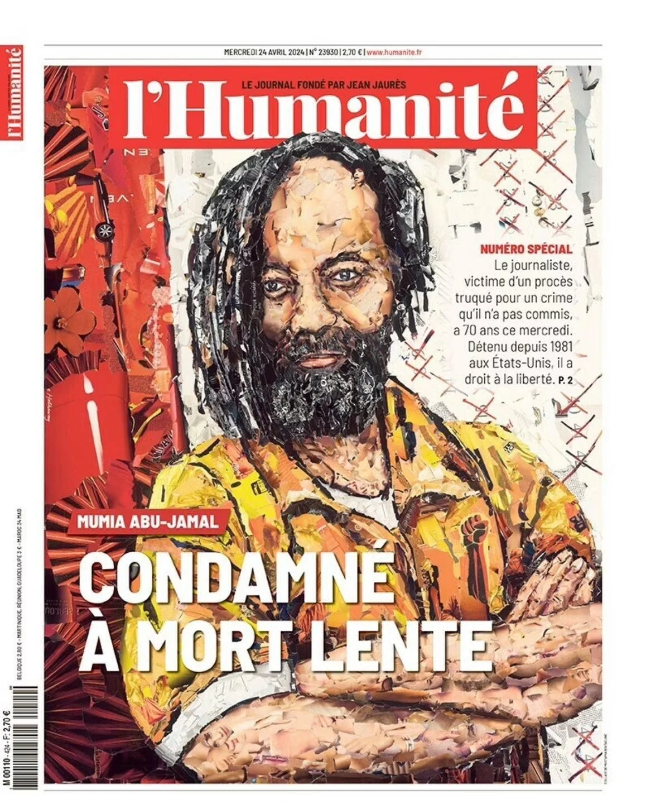

Publication relayée par le PCF 79
Fabien Gay rappelle la mobilisation pour la libération de Mumia Abu-Jamal
Date de mise à jour indiquée par Facebook · 25 avril 2024
Texte de la publication · Fabien Gay
Mumia Abu Jamal fêtera ses 70 ans. Il est détenu depuis 1981 dans les prisons américaines.
Avec l’Humanité, nous nous tenons aux côtés de celles et ceux qui luttent pour obtenir sa libération.
Mumia en Une de notre journal. Nous ne t’oublions pas !

Sources
Fabien Gay · publication relayée par le PCF 79 · bibliothèque Facebook · AR-0002-FB-01412
À lire aussi · Journée internationale de la paix. Le texte national dans le relevé